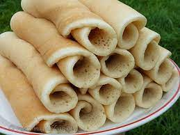

Canjeero

Description
Canjeero is typically made from a batter consisting of
flour (often a combination of wheat flour and sometimes corn flour or
millet flour), water, and a small amount of yeast.
Sometimes, a portion of the batter is saved from a previous batch to
ferment and provide a sourdough-like flavor.
Ingredients
- 1 cup all-purpose flour
- 1 cup corn flour (optional, for texture)
- 1 teaspoon active dry yeast
- 1 teaspoon sugar
- 1/2 teaspoon salt
- 2 cups lukewarm water
- Oil or ghee (clarified butter) for cooking
Steps
-
In a large mixing bowl, combine all-purpose flour, corn flour, yeast,
sugar, and salt.
-
Gradually add lukewarm water while stirring to form a smooth batter.
-
Cover the bowl and let the batter ferment at room temperature for at
least 6 hours or overnight.
-
Heat a non-stick skillet over medium heat and lightly grease with oil or
ghee.
-
Stir the fermented batter and pour a ladleful onto the skillet,
spreading it thinly.
-
Cook for 1-2 minutes until bubbles form on the surface, then flip and
cook the other side until golden brown.
-
Repeat with the remaining batter, greasing the skillet between each
Canjeero.
-
Serve warm with honey, ghee, yogurt, or alongside Somali stews (maraq).